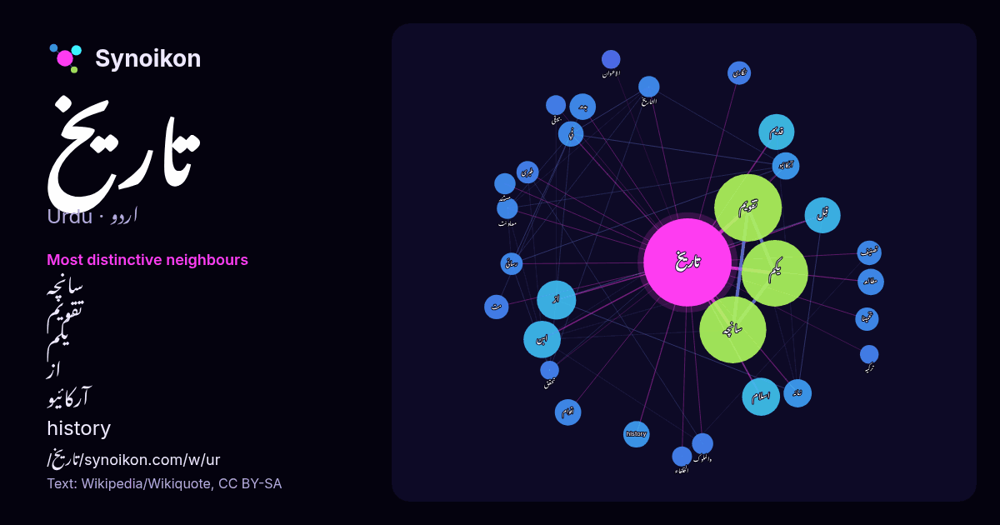

اردو · مقبول لفظ
تاریخ
“history” · ویکیپیڈیا, Wikiquote کے 973 استعمالات میں اس کے آس پاس ملنے والے الفاظ۔

سب سے نمایاں پڑوسی
- سانچہ 83×
- تقویم 79×
- یکم 64×
- از 16×
- آرکائیو 15×
- history 14×
- في 13×
- تخمینا 12×
- ابن 11×
- التاريخ 9.9×
- والملوک 9.9×
- طبری 9.9×
- قبل 9.7×
- اقوام 9.6×
- بدھ 9.5×
- زمانہ 9.4×
- معاونت 9.0×
- قدیم 8.9×
- الخلفاء 8.9×
- بیہقی 8.8×
× = عام ویکیپیڈیا متن کے مقابلے میں کتنے گنا زیادہ۔
سب سے زیادہ آنے والے پڑوسی
- میں 204
- سے 128
- کا 118
- تقویم 92
- سانچہ 90
- یکم 89
- اس 72
- کو 55
- جو 44
- نے 34
- یا 34
- بھی 32
- از 31
- اسلام 29
- کتاب 29
- ابن 28
- سال 28
- پاکستان 27
- قبل 26
- قدیم 26
سیاق میں
- تاریخ جامع انسانی کے انفرادی و اجتماعی اعمال و افعال اور کردار کی آئینہ دار ہوتی ہے۔ تاریخ انسانی زندگی کے مختلف شعبوں میں گذشتہ نسلوں کے بیش بہا تجربات Wikipedia snippets · تاریخ
- تاریخ الرسل والملوک جو تاریخ الامم والملوک یا تاریخ طبری کے نام سے مشہور ہے، اہل سنت کے مشہور عالم و محقق محمد ابن جریر الطبری (838ء تا 923ء) کی لکھی Wikipedia snippets · تاریخ الرسل والملوک
- تاریخ پاکستان یا پاکستان کی تاریخ سے مراد اُس خطے کی تاریخ ہے جو 1947ء کو تقسیم ہند کے موقع پر ہندوستان سے الگ ہو کر اسلامی جمہوریہ پاکستان کہلایا۔ تقسیم Wikipedia snippets · تاریخ پاکستان
- جدید ریاست کی تاریخ کے لیے جمہوریہ ترکیہ کی تاریخ دیکھیں۔ ترکیہ کی تاریخ اس سرزمین کی تاریخ ہے جو آج جمہوریہ ترکیہ کی تشکیل کرتی ہے اور اس میں اناطولیہ، Wikipedia snippets · تاریخ ترکیہ
- ۔ یہودیوں کی تاریخ بھی دیکھیں جس میں انفرادی ملک کی یہودی تاریخ کے روابط شامل ہیں ۔ یہودیوں پر عقوبت کی تاریخ کے لیے سام دشمنی، تاریخ سام دشمنی اور Wikipedia snippets · یہودی تاریخ کا خط زمانی
- جمہوریہ ہند کی تاریخ 16 جنوری 1950ء سے شروع ہوتی ہے۔ 15 اگست 1947ء کو بھارت کو برطانوی راج سے آزادی ملی اور بھارت ایک آزاد ملک بن گیا۔ Wikipedia snippets · جمہوریہ ہند کی تاریخ
- قدیم تاریخ (انگریزی: Ancient history) ایک مجموعی اصطلاح کے طور پر ماضی کے سبھی واقعات کا نام ہے جو تحریر شدہ انسانی تاریخ اور قرون وسطی تک پھیلی ہوئی ہے۔ Wikipedia snippets · قدیم تاریخ
- ایتھوپیا کا ملک بننے والی سرزمین کی تاریخ انسانیت کے آغاز سے ہی کئی ہزار سالہ پیچھے ہے۔ سانچہ:History of Ethiopia پہلے ہی دو ہزار قبل مسیح کے اختتام پر Wikipedia snippets · تاریخ ایتھوپیا
مزید الفاظ
2026-10-09 کو طے شدہ ترتیبات (±5 الفاظ، درمیانہ کارپس) کے ساتھ پہلے سے شمار کیا گیا۔ انٹرایکٹو نقشہ اسے لائیو ڈیٹا سے تازہ کر سکتا ہے۔
مشینی ترجمہ شدہ انٹرفیس؛ اصلاحات کا خیرمقدم ہے۔